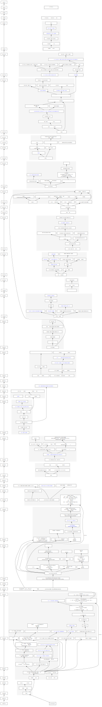

毕业经验分享
谢本壹
2024年4月23日
1 笔记
如何记得多、查得快？
和内存面临的问题相似：容量vs速度
解决方法：多层次缓存
| 容量 | 速度 | 形式 |
|---|---|---|
| 🟦 | 🟩🟩🟩🟩🟩 | 📃一张超大的速查清单 |
| 🟦🟦 | 🟩🟩🟩🟩 | 📑网上各类速查清单 |
| 🟦🟦🟦 | 🟩🟩🟩 | 📔个人笔记 |
| 🟦🟦🟦🟦 | 🟩🟩 | 📚官方文档 |
| 🟦🟦🟦🟦🟦 | 🟩 | 🌏互联网 |
1.1 📃一张超大的速查清单
- 常用软件操作：tar, gcc, cmake, …
- 编程语言语法: c/c++, python, bash, …
- 复杂软件用法：vim, tmux, …
- 指令集语义：x86, arm, la, …
- …
例子：一张超大的速查清单
1.2 📑网上各类速查清单
- 常用软件用法
- 编程语言语法：
- 复杂软件用法：
- 指令集语义
1.3 📔个人笔记
分成三个部分，分别和Git类比
| 个人笔记 | Git |
|---|---|
| 笔记主体 | Working tree |
| 思路 | Commit之间的关系 |
| 待办（TODO） | Issues & Milestone |
1.3.1 个人笔记：笔记主体
很多同学都非常有经验
参考：实验室的Gitlab: Notes仓库
关键：做好分类，方便自己查询
1.3.2 个人笔记：思路
尽管markdown有超链接（类似Obsidian做得更多）
但文字不直观不方便
思维导图

作图使用graphviz
1.3.3 个人笔记：待办
尽管markdown写TODO+grep就可以
但是不直观不方便
专门的待办软件
1.4 📚官方文档
- 常用软件操作
- man
- -h/–help
- 编程语言语法
- 复杂软件用法
- Github README.md/Wiki
- vim :h
- 指令集语义
- 指令集手册
注：进行分类，全放入浏览器收藏夹
1.5 🌏互联网
博客、论坛、书籍等各类资料
- 通用搜索
- Google, Bing, …
- 专用搜索
- StackOverflow家族, …
- 内部搜索
- Github issues, Mail archives, Hacker News, LWN.net, …
- …
2 论文笔记
论文笔记：笔记的一类特殊子集
特点：标题、发表时间、作者、期刊/会议、引用数、团队等信息
如何记得多、查得快？
和内存/笔记面临的问题相似：容量vs速度
解决方法：多层次缓存
| 容量 | 速度 | 形式 |
|---|---|---|
| 🟦 | 🟩🟩🟩🟩🟩 | 🖥️自动生成的速查清单 |
| 🟦🟦 | 🟩🟩🟩🟩 | 🗓️手动维护的清单 |
| 🟦🟦🟦 | 🟩🟩🟩 | 📥团队的论文仓库 |
| 🟦🟦🟦🟦 | 🟩🟩 | 📚学术网址 |
| 🟦🟦🟦🟦🟦 | 🟩 | 🌏互联网 |
2.1 🖥️自动生成的速查清单
对每一篇论文进行编码
实际操作的例子
- venkat的论文笔记
venkat md - isca的论文：
isca pdf - ucache相关的论文：
ucache pdf
实现方式： 快速打开 +模糊搜索器fzf +fzf-doc bash脚本
2.2 🗓️手动维护的清单
论文清单：除了上述编码的内容以外还有注和题目
2.3 📥团队的论文仓库
大家添加了很多文章
2.4 📚学术网址
- 排名
- 出版商
- 文献情报中心：资源所外获取
- 超多出版商…
- 中科院学位论文知识发现系统
- 文献情报中心：资源所外获取
2.5 🌏互联网
略
3 谢谢
👨👩🙋
👩🙋👨
🙋👨👩